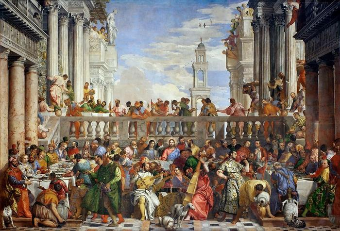

ATEO Este amor es como una religión Asuntos peligrosos del pasado me persiguen todavía Historias que la gente no olvidó y que me recuerdan cada día Sigue, que vivo aquí, no me va a matar una vieja herida Déjales que hablen mal, se mueran de envidia

Yo era ateo, pero ahora creo Porque un milagro como tú ha tenido que bajar del cielo Yo era ateo, pero ahora creo Porque un milagro como tú ha tenido que bajar del cielo Yo era ateo, pero ahora creo Porque un milagro bajó del cielo Yo era ateo, pero ahora creo

Me sacaste de la oscuridad Somos un asunto 'e gravedad Tú despierta' ese diablo mío que me roba toda espiritualidad Ya no sé lo que me pasa Ahora nada te reemplaza Tu boca es como mi casa Lo que ellos dicen parece veneno Si me preguntan, yo le' diré que no lo sé Quiero gritar que te echo de menos Dame del agua bendita que calma mi sed
Canción de C tangana y Nathy Peluso, Página de Valentina Godoy
(October 11,2021)